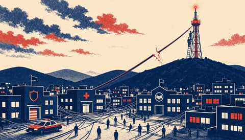
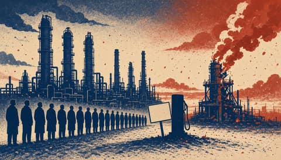
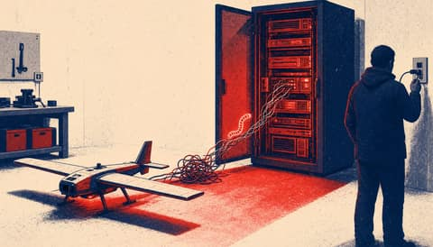
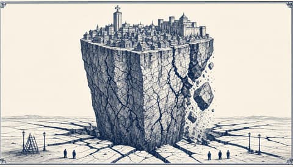
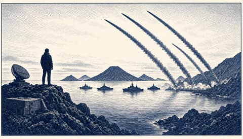
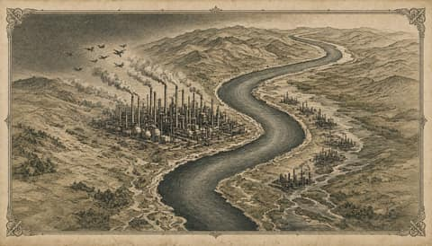

Europae Laeva
One Europe, for the many.

Microsoft outage cut email and Teams across Europe, disrupting UK health appointments and schools- Japan weighs 50 to 60 trillion yen for defence from fiscal 2027

Analyst says Ukrainian strikes put about 55% of Russia's petrol refining out of action
Quantum Systems drone fleet flying again after cyberattack on update server Slovakia and France team up to push for power bills decoupled from gas prices
Slovakia and France team up to push for power bills decoupled from gas prices
The Harbour Ledger
News from the quay up.
- Europe gets a seat at the next Ukraine talks, but not the deal
 EU sanctions cut Russia trade to 58 billion euros but enforcement lags
EU sanctions cut Russia trade to 58 billion euros but enforcement lags Launch the Black Sea mission while Turla sits in government mail
Launch the Black Sea mission while Turla sits in government mail French cyber agency blames Iran's Revolutionary Guard for shop fridge attack
French cyber agency blames Iran's Revolutionary Guard for shop fridge attack Hackers hit freezers at 700 French supermarkets, Paris blames Iran
Hackers hit freezers at 700 French supermarkets, Paris blames Iran
Attacotti
Scotland's way home runs through Europe.


Europa Surgit
Europe is rising. Keep up.
Nuntii Europae
News from a European perspective.
- European Commission launches defence campaign citing EU army support
- Finland's Parliament to vote on extending border security law to end of 2028
 US says Europe will join next Ukraine talks as EU argues over who represents it
US says Europe will join next Ukraine talks as EU argues over who represents it Slovak and French presidents call for overhaul of EU electricity pricing
Slovak and French presidents call for overhaul of EU electricity pricing EU leaders gather in Dublin to debate who speaks for Europe in Ukraine talks
EU leaders gather in Dublin to debate who speaks for Europe in Ukraine talks
Nuntii Batavi
The Netherlands, between The Hague and Brussels.


Leo Batavus
The Netherlands decides.
 Nordic defence ministers agree to develop a joint defence agreement
Nordic defence ministers agree to develop a joint defence agreement EU auditors say uneven enforcement blunts Russia sanctions
EU auditors say uneven enforcement blunts Russia sanctions French minister Barrot calls Mélenchon a spokesman for the Kremlin
French minister Barrot calls Mélenchon a spokesman for the Kremlin At least 20 dead in two boats off Crete, minister plans EU return hubs
At least 20 dead in two boats off Crete, minister plans EU return hubs Ten JEF countries to sign naval partnership pact on 10 November
Ten JEF countries to sign naval partnership pact on 10 November
Europae Dexter
A sovereign Europe, argued plainly.
- EU ministers to approve sanctions on 145 over Russian war effort
- Commission launches defence campaign amid 71% support for an EU army

Microsoft outage hit email and Teams across Europe, exposing UK police and NHS reliance- With Volgograd hit, 55% of Russia's gasoline capacity is out of action, Vakulenko says

Japan to revise security documents a year early, weighing 50 to 60 trillion yen plan
Europa Patriarum
A Europe of nations.

Ukraine strikes Volgograd refinery as analyst says 55% of Russian gasoline output is down France blames Iran's Revolutionary Guard for cyber attack on 700 retail sites
France blames Iran's Revolutionary Guard for cyber attack on 700 retail sites Portugal rebukes NATO chief Rutte over 'flippant' missile remarks
Portugal rebukes NATO chief Rutte over 'flippant' missile remarks Karasin says no agreement exists for Europeans to join the Abu Dhabi talks
Karasin says no agreement exists for Europeans to join the Abu Dhabi talks At least 20 dead in two boats off Crete as minister plans EU return hub initiative
At least 20 dead in two boats off Crete as minister plans EU return hub initiative